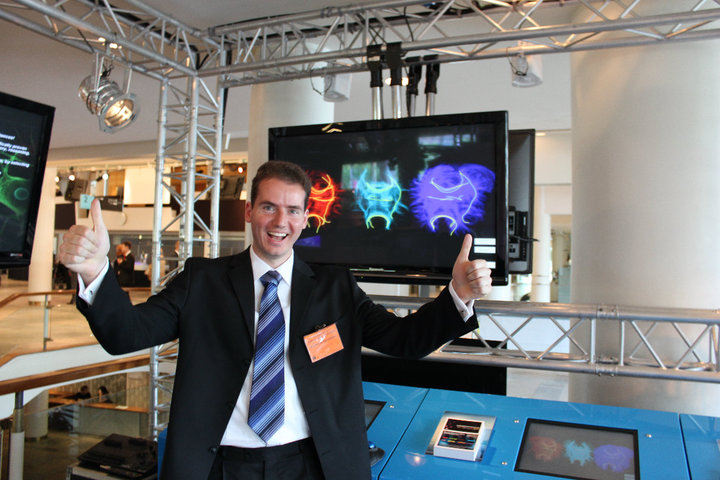

Dr. Eleftherios Garyfallidis is a passionate inventor/engineer/visionary building the future of computational anatomy. In 2009, he started a revolutionary open source project called Diffusion Imaging in Python (DIPY). Under his leadership, DIPY grown to a multinational and dynamic project with many enthusiastic contributors and a large user-base. DIPY filled a large gap in the neuroscientific community because there was no other software library that was truly international. Until DIPY’s rise, every lab was promoting their own poorly tested and badly documented internal tools. Today, DIPY brings together the best of software engineering and the best scientists around the world contributing in the same codebase. So you can think of it as something between the Manhattan Project and the Linux Kernel focused in medical imaging.
Apart from leading the development of DIPY, Dr. Garyfallidis have performed research on nearly all levels of diffusion MRI (dMRI) analysis. dMRI is an MRI technique that can be used to study non-invasively the structural connectivity of the brain and other biological tissue types. Recently, he started focusing more on the problems of segmentation and registration of tractography using only streamline information. These are nontrivial problems mainly because they are new. Although the scientific community has acquired knowledge of many decades on how to process images but not how to process streamlines. Which is great because that means their is plenty of space for innovation. Some of Dr. Garyfallidis greatest inventions include QuickBundles an algorithm for efficient simplification of tractographies and Streamline-based Linear Registration (SLR) a method for linear registration of bundles and creation of bundle-specific atlases.
Dr. Garyfallidis holds a PhD in medical imaging from the University of Cambridge, United Kingdom, and he is currently working as a Postdoctoral researcher at the wonderful and dynamic lab of Professor Maxime Descoteaux, at the University of Sherbrooke in Canada and of course continue leading the international development of DIPY. Nonetheless, Dr. Garyfallidis is a keen participant in scientific competitions. In 2013 he lead a team of scientists to win the international IEEE HARDI reconstruction competition.
For more information here is Dr. Garyfallidis CV.
Contact
- For research questions, collaborations and media inquiries please send an e-mail to garyfallidis@gmail.com.
- For questions concerning DIPY please send directly an e-mail to neuroimaging@python.org with a title starting with [DIPY].
- For urgent issues find the rest of his contact details here.